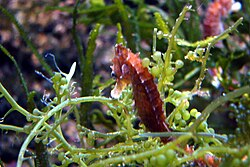

El cuerpo de los caballitos de mar está cubierto por una armadura de placas o anillos de constitución ósea. Respiran mediante branquias y su cuerpo se soporta gracias a la columna vertebral.[3] Para comunicarse con sus congéneres, causan chasquidos con rápidos movimientos en su cabeza, haciendo rozar una parte del cráneo con una parte de su esqueleto externo superior. Este sonido también es perceptible en cautividad, cada vez que aspiran una presa con su tubo bucal.

Se aparean estacionalmente, cuando se incrementa la temperatura del agua. Después de un baile ceremonial, la pareja de caballitos entrelazan sus colas, y, tras una serie de "contoneos" mezclados con períodos de pausa, que pueden ser de quince a veinte minutos, el macho deja caer su líquido seminal al exterior, y la fecundación de los huevos se produce según los huevos van entrando en el saco del macho. Las hembras trasplantan sus huevos con ayuda de una papila genital, apéndice cloacal u ovopositor, de unos tres milímetros de largo, en la bolsa ventral de los machos, donde pueden desarrollarse bien protegidos.